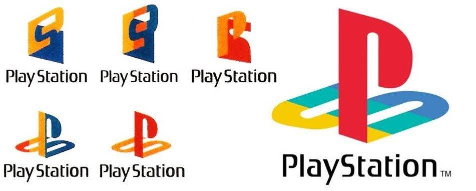

Nombre de una serie de consolas de videojuegos creadas y desarrolladas por Sony Interactive Entertainment. Han estado presentes en la quinta, sexta, séptima, octava y futura novena generación de videoconsolas, la compañía promotora está actualmente en el mercado con su PlayStation 4
y ahora con la PlayStation 5.
La marca se introdujo por primera vez el 3 de diciembre de 1994 en Japón y ha desarrollado y publicado cinco videoconsolas de sobremesa
Trailer Ultima Consola